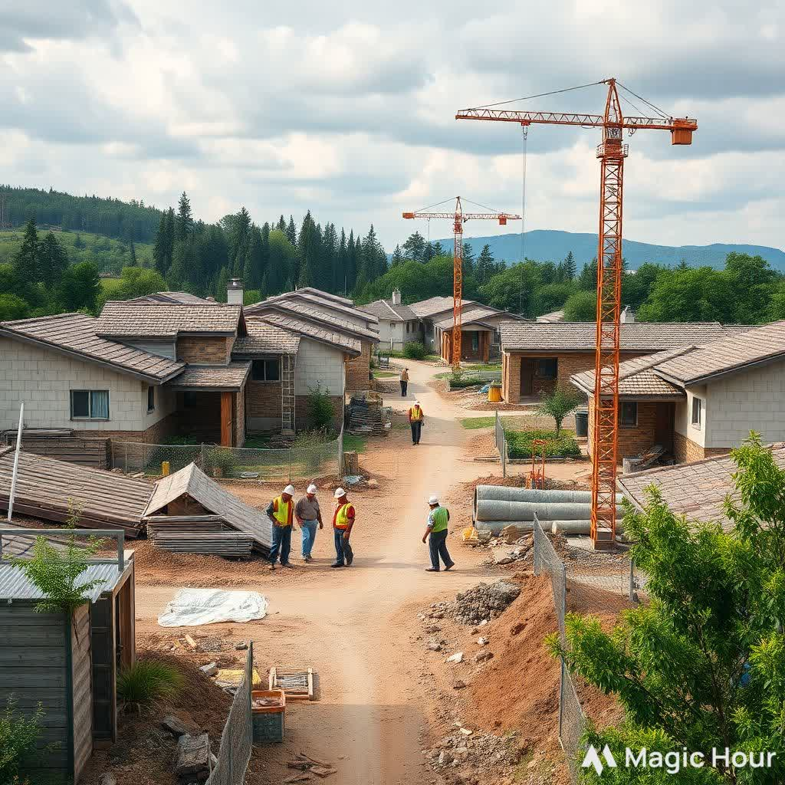
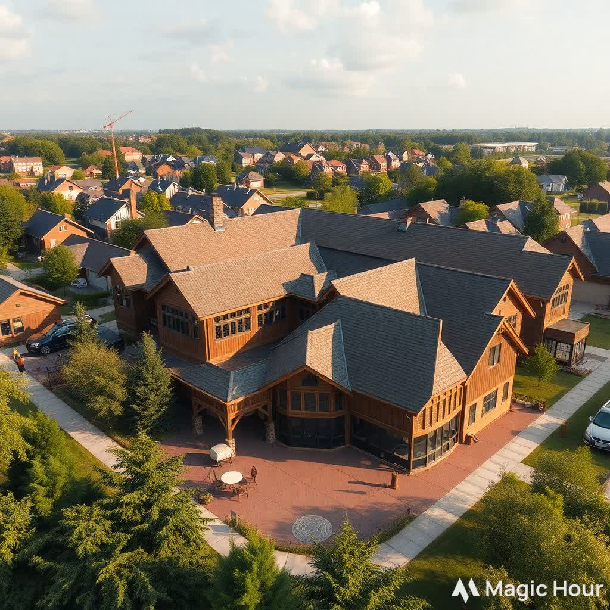

History
Naawi-Oodena is built on the kapyong barracks which was a military base primarily used for the 2nd Battalion of canada but it retired in june of 2004. Naawi-Oodena was given to Treaty 1 on August 30th, 2019 after fighting for it court against the Canadian government. Finally, in 2047 we completed building all 3000 homes and community centres which are now open for anyone to move into.
Fun Fact
The indigenous people were promised 160 acres for every family
of five and more or less depending on the size of family.

Naawi-Oodena is the largest canadian reserve
Source of Naawi-Oodena Largest Reserve Video